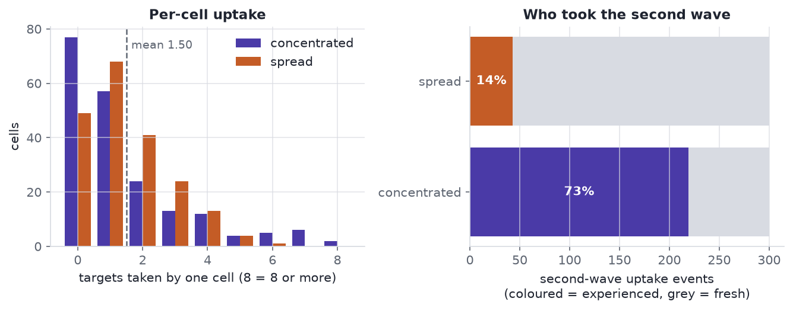

![]()
flowchart LR
dying["Dying cell exposes<br/>an eat-me signal"] --> bind["Macrophage binds<br/>the target"]
bind --> intern["Internalisation<br/>into a phagosome"]
intern --> proc["Processing in the<br/>phagolysosome"]
proc -.-> ready{"Ready<br/>again?"}
ready -.-> bind

Draft — pending review by Elkin Navarro Quiroz
Elkin must approve the text and his credit before this goes live.
A clearance assay hands back one number per well: how much of the dying-cell load disappeared. That number is a sum over cells, and a sum keeps no record of which cells produced it. This guide covers the biology that makes the missing record matter — what macrophages are clearing, why the timing is urgent, and why two populations with the same average can be in very different shape when the next wave arrives.
1 Summary
Macrophages are the cells that eat and dispose of dying cells, and dying cells usually arrive in repeated waves rather than all at once. An average taken over a dish hides which macrophages did the eating. The distinction matters, because how a tissue copes with the next wave depends on the state of the cells that handled the last one.
2 The setting
Most cell death in a healthy body is scheduled. Apoptosis is programmed cell death: a cell runs a controlled self-destruction routine that packages its contents instead of spilling them (Kerr et al. 1972). It is routine: billions of cells die this way every day in an adult human, and something must remove them (Arandjelovic and Ravichandran 2015).
Removal is urgent. An apoptotic cell that is left in place eventually loses membrane integrity and spills what it was holding, a state called secondary necrosis (Silva 2010). The spilled contents are inflammatory, so a delay turns a quiet, scheduled death into an immune event (Poon et al. 2014).
3 The cleaners
A macrophage is a phagocyte: a cell whose job is to engulf and digest other cells and debris. Efferocytosis is the recognition, engulfment and disposal of an apoptotic cell by a phagocyte (Doran et al. 2020). It runs in stages.
- Eat-me signal. The dying cell moves phosphatidylserine — a lipid that a healthy cell keeps on the inner face of its membrane — to the outer face, where it can be read from outside (Ravichandran 2011).
- Binding. Macrophage receptors read that lipid, either directly or through a bridging molecule that sticks to both cells (Poon et al. 2014).
- Internalisation. The target is drawn into a pocket of membrane called a phagosome.
- Processing. The phagosome fuses with lysosomes to form a phagolysosome, which breaks the cargo down, and the macrophage then metabolises the pieces (Doran et al. 2020).
Clearing a target is not neutral for the eater: successful efferocytosis pushes the macrophage toward an anti-inflammatory programme that helps shut an inflammatory episode down (Doran et al. 2020).
4 Repeated meals
Dying cells arrive in waves. An injury, an infection, or a plaque produces a burst of apoptotic cells, then another. A macrophage that has already eaten is not in the state it started in, and published work points two ways at once.
Full. Each target brings a load of membrane lipid and cholesterol that the eater has to break down and dispose of. Taking a second target requires machinery that a first target ties up: mitochondrial fission is one step a macrophage needs to keep going after one meal (Wang et al. 2017). The standard example of clearance that fails while dying cells keep arriving is the atherosclerotic plaque, where macrophages accumulate alongside uncleared dead cells (Kojima et al. 2017; Adkar and Leeper 2024). That load can be read one cell at a time: Raman micro-spectroscopy recovers lipid content and fatty-acid composition inside single human macrophages without a stain (Stiebing et al. 2014).
Primed. The first meal can also enable the next. Arginine and ornithine released by degrading a first apoptotic cell are metabolised into polyamines that support further uptake and help resolve the injury (Yurdagul et al. 2020).
Both effects are published. Which one dominates in a given tissue, at a given load, is not settled.
5 Same total, different story
An analogy, and only an analogy: a kitchen serves 100 meals an hour. Two star chefs can produce them, or a rotating team of ten can. The ticket rail reads the same either way. What happens when one cook walks out does not.
Macrophages divide work the same way. An average fixes the total and says nothing about the spread, so two dishes that match on the assay can hold different reserves.
The figure is simulated: no experimental data were used, and no number in it is a claim about a real macrophage population. The generating process: 200 cells, 60 of them labelled experienced because they took a target in a first wave; a second wave of 300 uptake events allocated over all 200 cells by a weighted multinomial draw, with the weight on experienced cells high in one scenario and low in the other. Both allocate the same 300 events, so the mean per cell matches. It stands in for the contrast a real two-wave assay has to resolve.
Code
rng = np.random.default_rng(20260917)
n_cells = 200
n_experienced = 60
n_second = 300
experienced = np.zeros(n_cells, dtype=bool)
experienced[:n_experienced] = True
def allocate(weight_experienced):
"""Spread n_second uptake events over the cells, weighting the experienced."""
weights = np.where(experienced, weight_experienced, 1.0)
return rng.multinomial(n_second, weights / weights.sum())
concentrated = allocate(6.0)
spread = allocate(0.35)
runs = {"concentrated": (concentrated, ACCENT), "spread": (spread, CORAL)}
mean_uptake = n_second / n_cells
share = {k: v[0][experienced].sum() / n_second for k, v in runs.items()}
idle = {k: float((v[0] == 0).mean()) for k, v in runs.items()}
fig, (ax1, ax2) = plt.subplots(1, 2, figsize=(9, 3.6))
edges = np.arange(9)
for offset, (name, (counts, colour)) in zip((-0.2, 0.2), runs.items()):
heights = np.bincount(np.clip(counts, 0, 8), minlength=9)
ax1.bar(edges + offset, heights, width=0.4, color=colour, label=name)
ax1.axvline(mean_uptake, color=MUTED, ls="--", lw=1.2)
ax1.text(mean_uptake + 0.15, ax1.get_ylim()[1] * 0.9, f"mean {mean_uptake:.2f}",
color=MUTED, fontsize=9)
ax1.set_xlabel("targets taken by one cell (8 = 8 or more)")
ax1.set_ylabel("cells")
ax1.set_title("Per-cell uptake")
ax1.legend()
for row, (name, (counts, colour)) in enumerate(runs.items()):
taken = counts[experienced].sum()
ax2.barh(row, taken, color=colour)
ax2.barh(row, n_second - taken, left=taken, color=RULE)
ax2.text(taken / 2, row, f"{share[name]:.0%}", ha="center", va="center",
color="white", fontweight="bold")
ax2.set_yticks(range(len(runs)), list(runs))
# No legend: each row carries its own colour, so a single key would read as
# "purple means experienced". The axis label says what the two segments are.
ax2.set_xlabel("second-wave uptake events\n(coloured = experienced, grey = fresh)")
ax2.set_title("Who took the second wave")
ax2.grid(axis="y", visible=False)
fig.tight_layout()
Both scenarios clear 300 targets, a mean of 1.50 per cell. Experienced cells take 73% of the second wave under the concentrated rule and 14% under the spreading one. The fraction of cells that take nothing at all moves with it: 38% against 24%. An assay reporting the mean would call these two dishes the same.
6 Key concepts
| Term | Plain meaning |
|---|---|
| Apoptotic cell | A cell part-way through programmed self-destruction, still intact and still packaged (Kerr et al. 1972). |
| Neutrophil | A short-lived white blood cell that arrives first at an injury and then dies there in large numbers, becoming cargo (Nauseef and Borregaard 2014). |
| Monocyte-derived macrophage | A macrophage grown in culture from a blood monocyte of one human donor. Donors differ: the same stimulus gives measurably different responses across people, so donor is a variable, not noise (Nédélec et al. 2016). |
| Wave (challenge) | One delivery of apoptotic targets to the cells. Two waves separated in time is the smallest design that can ask whether the first changed the second. |
| Load (history) | How much a given cell has already taken and is still working through. It is a property of one cell, not of the dish. |
| Opportunity | How many targets are physically within reach of a given cell. A cell that never meets a target cannot eat one, and that is not a statement about its appetite. |
| Access versus signalling | Two reasons uptake can fall: the target never got close enough (access), or it got close and was not recognised or engulfed (signalling). Only the second is about the machinery. |
| Flux versus abundance | How much of something a cell holds is not how fast material moves through it. A steady pool can sit on a fast throughput or a stalled one. Feeding cells a stable-isotope-labelled lipid and watching where the label turns up is one way to make a composition snapshot report movement (Matthäus et al. 2012). |
| Label-free metabolic imaging (FLIM) | Fluorescence lifetime imaging reads the decay time of a cell’s own metabolic cofactors, so it reports on single-cell metabolic state without adding a stain or a reporter (Datta et al. 2020); it separates macrophage states this way (Neto et al. 2022). |
| Raman micro-spectroscopy | A second label-free readout, reading chemistry rather than metabolic state. Light scattered off a cell shifts in frequency by the vibrations of the molecules it hit, so the spectrum is a composition fingerprint — lipid, protein, cholesterol — taken without a dye (Butler et al. 2016). |
7 What an arm is
An arm is a group that gets one assigned version of the treatment, in the sense a clinical trial uses the word. Patients do not pick their arm; the trial assigns it. The groups then differ only in what was assigned, so a difference in outcome can be traced to it.
For a two-wave efferocytosis experiment, the thing to assign is how the first wave is distributed, holding the amount fixed.
| Arm | First wave | Why it is there |
|---|---|---|
| Broad | The same total amount, spread thinly over all cells | Many cells get a small history, so experience is common and light. |
| Concentrated | The same total amount, delivered to a subset chosen in advance | Few cells get a heavy history, so experience is rare and deep. |
| No first wave | None | A reference for what the second wave looks like in cells with no history at all. |
Assignment is what makes the contrast causal. Within one dish we can also sort cells by how much they ate and compare the heavy eaters against the light ones — but the cells that ate more may be the cells that were always going to eat more: better placed, larger, more receptive. That comparison measures history and pre-existing appetite mixed together, and no statistical care separates them after the fact. A sharper instrument does not rescue it either: reading each cell’s lipid load without a stain makes the heavy eaters easy to find, and says nothing about why they are heavy. Assigning how the first wave is distributed, with the total held fixed, leaves history as the only difference.
8 Why it matters
Clearance that fails is a feature of real disease, not a laboratory curiosity.
- Atherosclerosis. Dead cells accumulate faster than macrophages remove them, and the resulting necrotic core is what makes a plaque dangerous (Kojima et al. 2017; Adkar and Leeper 2024).
- Lupus. Deficient clearance of dying cells leaves nuclear material exposed to the immune system, one route to the autoantibodies that define the disease (Mahajan et al. 2016).
- Acute lung injury. Alveolar macrophages from patients with acute respiratory distress syndrome clear apoptotic neutrophils and their DNA traps poorly (Grégoire et al. 2018), part of a pattern across lung disease (McCubbrey and Curtis 2013).
If both scenarios are reachable, a treatment has two targets: protect the fresh cells so the reserve stays large, or speed digestion in the experienced ones so their capacity returns. Which is better — and whether the answer is the same in a plaque and in a lung — is an open question.
9 Next
The companion modelling post, Who Does the Clearing?, takes these two scenarios and fits them: a history-dependent recurrent-event model separating mechanisms that share a population curve, and what the assigned arms buy that observation alone does not.
10 Acknowledgements
TODO — pending review.
Averages. Hide. Who. Ate. History. Changes. Capacity. Assign. The. Wave.
11 References
- Adkar, S. S., and Leeper, N. J. (2024). Efferocytosis in atherosclerosis. Nature Reviews Cardiology 21(11): 762-779. doi:10.1038/s41569-024-01037-7
- Arandjelovic, S., and Ravichandran, K. S. (2015). Phagocytosis of apoptotic cells in homeostasis. Nature Immunology 16(9): 907-917. doi:10.1038/ni.3253
- Butler, H. J., et al. (2016). Using Raman spectroscopy to characterize biological materials. Nature Protocols 11(4): 664-687. doi:10.1038/nprot.2016.036
- Datta, R., Heaster, T. M., Sharick, J. T., Gillette, A. A., and Skala, M. C. (2020). Fluorescence lifetime imaging microscopy: fundamentals and advances in instrumentation, analysis, and applications. Journal of Biomedical Optics 25(7): 071203. doi:10.1117/1.JBO.25.7.071203
- Doran, A. C., Yurdagul, A., and Tabas, I. (2020). Efferocytosis in health and disease. Nature Reviews Immunology 20(4): 254-267. doi:10.1038/s41577-019-0240-6
- Grégoire, M., et al. (2018). Impaired efferocytosis and neutrophil extracellular trap clearance by macrophages in ARDS. European Respiratory Journal 52(2): 1702590. doi:10.1183/13993003.02590-2017
- Kerr, J. F. R., Wyllie, A. H., and Currie, A. R. (1972). Apoptosis: a basic biological phenomenon with wide-ranging implications in tissue kinetics. British Journal of Cancer 26(4): 239-257. doi:10.1038/bjc.1972.33
- Kojima, Y., Weissman, I. L., and Leeper, N. J. (2017). The role of efferocytosis in atherosclerosis. Circulation 135(5): 476-489. doi:10.1161/CIRCULATIONAHA.116.025684
- Mahajan, A., Herrmann, M., and Muñoz, L. E. (2016). Clearance deficiency and cell death pathways: a model for the pathogenesis of SLE. Frontiers in Immunology 7: 35. doi:10.3389/fimmu.2016.00035
- Matthäus, C., Krafft, C., Dietzek, B., Brehm, B. R., Lorkowski, S., and Popp, J. (2012). Noninvasive imaging of intracellular lipid metabolism in macrophages by Raman microscopy in combination with stable isotopic labeling. Analytical Chemistry 84(20): 8549-8556. doi:10.1021/ac3012347
- McCubbrey, A. L., and Curtis, J. L. (2013). Efferocytosis and lung disease. Chest 143(6): 1750-1757. doi:10.1378/chest.12-2413
- Nauseef, W. M., and Borregaard, N. (2014). Neutrophils at work. Nature Immunology 15(7): 602-611. doi:10.1038/ni.2921
- Nédélec, Y., et al. (2016). Genetic ancestry and natural selection drive population differences in immune responses to pathogens. Cell 167(3): 657-669.e21. doi:10.1016/j.cell.2016.09.025
- Neto, N. G. B., O’Rourke, S. A., Zhang, M., Fitzgerald, H. K., Dunne, A., and Monaghan, M. G. (2022). Non-invasive classification of macrophage polarisation by 2P-FLIM and machine learning. eLife 11: e77373. doi:10.7554/eLife.77373
- Poon, I. K. H., Lucas, C. D., Rossi, A. G., and Ravichandran, K. S. (2014). Apoptotic cell clearance: basic biology and therapeutic potential. Nature Reviews Immunology 14(3): 166-180. doi:10.1038/nri3607
- Ravichandran, K. S. (2011). Beginnings of a good apoptotic meal: the find-me and eat-me signaling pathways. Immunity 35(4): 445-455. doi:10.1016/j.immuni.2011.09.004
- Silva, M. T. (2010). Secondary necrosis: the natural outcome of the complete apoptotic program. FEBS Letters 584(22): 4491-4499. doi:10.1016/j.febslet.2010.10.046
- Stiebing, C., Matthäus, C., Krafft, C., Keller, A.-A., Weber, K., Lorkowski, S., and Popp, J. (2014). Complexity of fatty acid distribution inside human macrophages on single cell level using Raman micro-spectroscopy. Analytical and Bioanalytical Chemistry 406(27): 7037-7046. doi:10.1007/s00216-014-7927-0
- Wang, Y., et al. (2017). Mitochondrial fission promotes the continued clearance of apoptotic cells by macrophages. Cell 171(2): 331-345.e22. doi:10.1016/j.cell.2017.08.041
- Yurdagul, A., et al. (2020). Macrophage metabolism of apoptotic cell-derived arginine promotes continual efferocytosis and resolution of injury. Cell Metabolism 31(3): 518-533.e10. doi:10.1016/j.cmet.2020.01.001
- Who Does the Clearing? — the companion modelling post: a population uptake curve does not say which macrophages did the work, and an assigned two-wave design does.